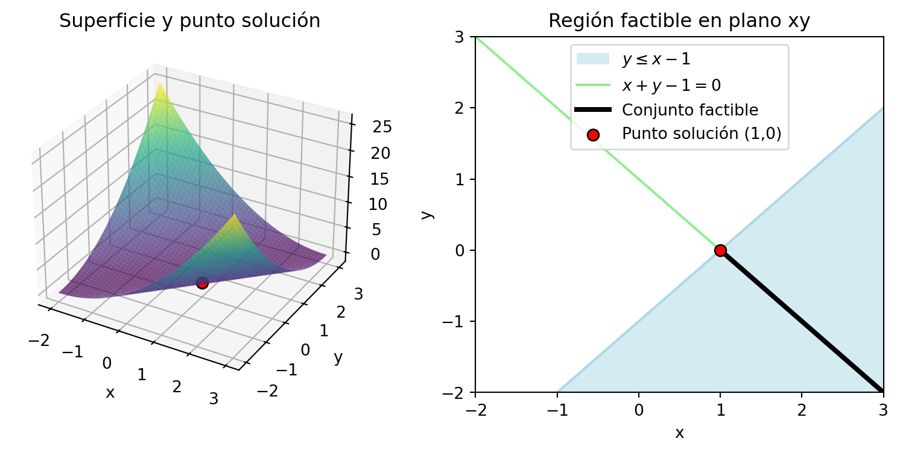
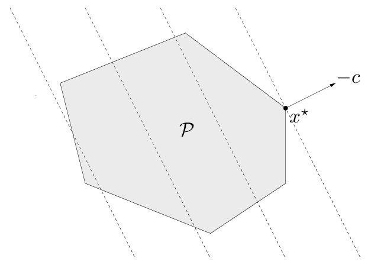
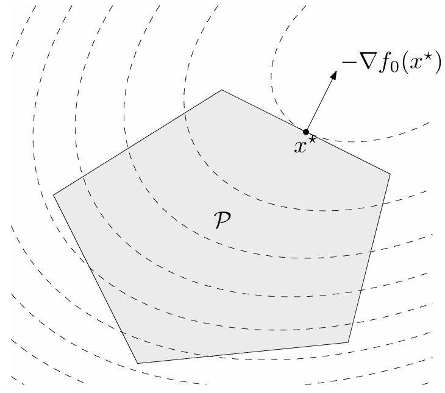

Una vez que hemos definido qué es un problema de optimización convexa, es natural preguntarse cómo se abordan estos problemas en la práctica. Afortunadamente, existen herramientas computacionales accesibles que permiten resolver problemas convexos de forma eficiente. En particular, en este curso utilizaremos dos librerías utilizadas en Python:
cvxpy: es una librería especializada en modelar y resolver problemas de optimización convexa. Permite expresar un problema con una sintaxis muy cercana a la notación matemática, y se encarga automáticamente de verificar si el problema es convexo y de seleccionar el solucionador adecuado.
scipy.optimize: es una colección de algoritmos de optimización general, que incluye métodos para resolver problemas con restricciones lineales y no lineales, tanto convexos como no convexos. Es útil para ilustrar problemas sencillos y ver qué sucede cuando no se garantiza convexidad.
A través de ejemplos concretos, veremos cómo utilizar estas herramientas para formular y resolver problemas de optimización. Esto también nos ayudará a motivar tanto el estudio de las condiciones de optimalidad como los métodos de optimización, que abordaremos en las proximas secciones, lo cual permitirá justificar porqué y cómo estas herramientas funcionan.
1 Sintaxis básica
1.1cvxpy
Pasos a seguir:
El uso básico de la librería cargada como cp es:
Definir las variables independientes con la clase cp.Variable.
Definir las restricciones.
Definir la función objetivo dentro de la clase cp.Minimize o cp.Maximize.
Definir el problema de optimización prob con la clase cp.Problem.
Resolver el problema con el método prob.solve().
Los siguientes ejemplos se encuentran disponibles en la guía de usuario de la librería.
Ejemplo 1 Resolveremos el problema de optimización convexa:
import cvxpy as cp# 1. Creamos dos variables:x = cp.Variable()y = cp.Variable()# 2. Definimos dos restricciones:constraints = [x + y ==1, x - y >=1]# 3. Definimos la función objetivo:obj = cp.Minimize((x - y)**2)# 4. Definimos el problema de optimización:prob = cp.Problem(obj, constraints)# 5. Resolvemos:prob.solve() print("Estado:", prob.status)print("Valor objetivo óptimo:", prob.value)print("Punto óptimo", x.value, y.value)
Estado: optimal
Valor objetivo óptimo: 1.0
Punto óptimo 1.0 1.570086213240983e-22
A continuación, vamos a representar geométricamente este problema: del lado izquierdo, el grafo en \(\RR^3\) de la función objetivo; del lado derecho, el conjunto factible como intersección de las restricciones dadas.
import numpy as npimport matplotlib.pyplot as pltfrom matplotlib.patches import Patch# Función:def f(x, y):return (x - y)**2# Grid:x = np.linspace(-2, 3, 100)y = np.linspace(-2, 3, 100)X, Y = np.meshgrid(x, y)Z = f(X, Y)# Solución del problema:solucion =1,0valor_optimo = f(solucion[0],solucion[1])# GRÁFICAS:fig = plt.figure(figsize=(10, 4))## Funcion objetivo:ax1 = fig.add_subplot(121, projection='3d')ax1.plot_surface(X, Y, Z, cmap='viridis', alpha=0.7)ax1.scatter(solucion[0], solucion[1], valor_optimo, color='red', edgecolors='black', s=50)ax1.set_title('Superficie y punto solución')ax1.set_xlabel('x')ax1.set_ylabel('y')## Conjunto factible:ax2 = fig.add_subplot(122)ax2.set_xlim(-2, 3); ax2.set_ylim(-2, 3)x_line = np.linspace(-2, 3, 100)# Restricción de igualdad:ax2.plot(x_line, 1-x_line, color ='lightgreen', label='$x + y - 1 = 0$')# Restricción de desigualdad:yy, xx = np.meshgrid(np.linspace(-2, 3, 100), np.linspace(-2, 3, 100))ax2.contourf(xx, yy, yy <= xx -1, levels=[0.5, 1], colors=['lightblue'], alpha=0.5)ax2.plot(x_line, x_line-1, color='lightblue', linestyle='-')patch = Patch(facecolor='lightblue', edgecolor='none', alpha=0.5, label=r'$y \leq x - 1$')# Intersección de restricciones:x_aux = np.linspace(1,3,100)ax2.plot(x_aux, 1-x_aux, color ='black', linewidth =3, label ='Conjunto factible')# Punto solución:ax2.scatter(solucion[0], solucion[1], color='red', edgecolors='black', s=50, zorder=10, label='Punto solución (1,0)')#ax2.set_title('Región factible en plano xy')ax2.set_xlabel('x')ax2.set_ylabel('y')ax2.legend()ax2.legend(handles=[patch] + ax2.get_legend_handles_labels()[0])plt.show()

Ejemplo 2 Resolveremos el problema de optimización convexa:
con \(A\in\RR^{n\times m}\) y \(\bb\in\RR^m\) aleatorios, para \(n,m\in\mathbb{N}\) fijos.
import cvxpy as cpimport numpy as np# Datos:m =10; n =5np.random.seed(1)A = np.random.randn(m, n)b = np.random.randn(m)# 1. Creamos variables:x = cp.Variable(n)# 2. Definimos restricciones:constraints = [0<= x, x <=1]# 3. Definimos la función objetivo:obj = cp.Minimize(cp.sum_squares(A @ x - b))# 4. Definimos el problema de optimización:prob = cp.Problem(obj, constraints)# 5. Resolvemos:prob.solve()print("Valor objetivo óptimo:", prob.value)print("Punto óptimo:", x.value)
Valor objetivo óptimo: 4.141338603672535
Punto óptimo: [-4.95922264e-21 6.07571976e-21 1.34643668e-01 1.24976681e-01
-4.57130806e-21]
1.2scipy.optimize
Pasos a seguir:
El uso básico de la librería scipy.optimize es:
Definir la función objetivo como una función de Python.
Definir las restricciones con las clases Bounds y LinearConstraint.
Proponer un punto inicial (guess) para las variables.
Resolver el problema con el método minimize.
El siguiente ejemplo se encuentra disponible en la documentación de la librería.
Ejemplo 3 La función de Rosenbrock es una función no convexa que se utiliza para evaluar el rendimiento de métodos de optimización numérica, debido a la dificultad para converger al valor mínimo. Para dos variables, está definida por \[
f(x,y)=(a-x)^2+b(y-x^2)^2,
\]
con \(a,b\in\RR\). En este ejemplo, consideraremos \(a=1\) y \(b=100\) y resolveremos el problema de optimización convexa:
from scipy.optimize import minimizefrom scipy.optimize import Boundsfrom scipy.optimize import LinearConstraintfrom scipy.optimize import NonlinearConstraintimport numpy as np# 1. Definimos la función objetivo:def rosen2d(x):"""Función de Rosenbrock para dos variables"""return100* (x[1] - x[0]**2)**2+ (1- x[0])**2# 2. Definimos las restricciones:## Cotas:bounds = Bounds([0, -0.5], [1, 2])## Restricciones lineales:linear_constraint = LinearConstraint([[1, 2], [2, 1]], lb=[-np.inf, 1], ub=[1, 1])## Restricciones no lineales:def cons_f(x):return [x[0]**2+ x[1], x[0]**2- x[1]]nonlinear_constraint = NonlinearConstraint(cons_f, lb=-np.inf, ub=1)# 3. Punto inicial:x0 = np.array([0.5, 0])# 4. Resolvemos:res = minimize(rosen2d, x0, method='trust-constr', constraints=[linear_constraint, nonlinear_constraint], options={'verbose': 1}, bounds=bounds)print("Éxito en optimización:", res.success)print("Valor objetivo óptimo:", res.fun)print("Punto óptimo:", res.x)
`gtol` termination condition is satisfied.
Number of iterations: 12, function evaluations: 24, CG iterations: 7, optimality: 4.48e-09, constraint violation: 0.00e+00, execution time: 0.036 s.
Éxito en optimización: True
Valor objetivo óptimo: 0.3427175756443014
Punto óptimo: [0.41494531 0.17010937]
2 Tipos de problemas de optimización convexa
Vamos a estudiar diversos tipos de problemas de optimización convexa y, en paralelo, su implementación mediante las librerías cvxpy y scipy.optimize. Organizaremos el contenido según categorías, siguiendo la clasificación del libro de Boyd.
2.1 Programación lineal
Cuando tanto la función objetivo como todas las restricciones son afines, el problema de optimización se llama programa lineal (LP).
Forma básica
\[
\min_{\xx}\,\cc^\top\xx+d
\]\[
\text{s.t.}\; \xx\in\Omega=\left\{\xx\in\RR^n\left|\begin{array}{rl}
G\xx\preceq \hh\\
A\xx=\bb
\end{array}\right.\right\},
\] donde \(\cc\in\RR^n\), \(G\in\RR^{r\times n}\), \(\hh\in\RR^r\), \(A\in\RR^{m\times n}\) y \(\bb\in\RR^m\).
El conjunto factible de un LP es un poliedro \(\mathcal{P}\). Los conjuntos de nivel de la función objetivo son hiperplanos ortogonales a la dirección \(\cc\). En consecuencia, el punto óptimo \(x^{\star}\) es aquel punto de \(\mathcal{P}\) lo más alejado posible en la dirección de \(-\cc\).

Interpretación geométrica de un LP.
Los programas lineales son, por supuesto, problemas de optimización convexa. Observar que, si \(\bfg_i\) es la \(i\)-ésima fila de \(G\), escribir \(G\xx\preceq \hh\) es equivalente a escribir \[g_i(\xx)=\bfg_i\xx-h_i\leq 0,\quad i=1,\cdots,r.\]
Lo mismo ocurre con las restricciones de igualdad.
Dos casos especiales de LP son tan comunes que se les ha dado nombres específicos. En un LP en forma estándar, las desigualdades son restricciones de no negatividad sobre las componentes de \(\xx\); es decir, \(\xx\succeq 0\). Por otra parte, si un LP no tiene restricciones de igualdad, se dice que está en forma de desigualdad.
En lo que sigue dejo PROBLEMAS TÍPICOS de LP provistos en Boyd. Lo que está escrito es la formulación general. La idea es proponer algun/os caso/s con números para que los estudiantes resuelvan con las librerías.
La dieta
Una dieta saludable contiene \(m\) nutrientes diferentes en cantidades al menos iguales a \(b_1, \ldots, b_m\). Podemos componer tal dieta eligiendo cantidades no negativas \(x_1, \ldots, x_n\) de \(n\) alimentos diferentes. Una unidad de cantidad del alimento \(j\) contiene una cantidad \(a_{ij}\) del nutriente \(i\) y tiene un costo de \(c_j\). Queremos determinar la dieta más barata que satisfaga los requisitos nutricionales. Esto conduce al siguiente LP: \[
\min_{\xx}\,\cc^\top\xx
\]\[
\text{s.t.}\; \xx\in\Omega=\left\{\xx\in\RR^n\left|\begin{array}{rl}
A\xx\succeq \bb\\
\xx\succeq \mathbf{0}
\end{array}\right.\right\}.
\]
Varias variaciones de este problema también se pueden formular como LPs. Por ejemplo, podemos insistir en una cantidad exacta de un nutriente en la dieta (lo que da una restricción de igualdad lineal), o podemos imponer un límite superior en la cantidad de un nutriente, además del límite inferior como se indicó anteriormente.
Ejemplo:PROPONER
El centro de Chebyshev
Consideremos el problema de encontrar la bola euclidiana más grande que se encuentra contenida en un poliedro descrito por desigualdades lineales: \[
\mathcal{P} = \{\xx \in \mathbb{R}^n \mid \aa_i^\top\xx \leq b_i,\quad i = 1, \ldots, m\}.
\]
El centro de la bola óptima se llama centro de Chebyshev del poliedro. Para poder formular el problema, debemos representar la bola mediante \[
\mathcal{B}(\xx,r) = \{\xx + \uu \mid \|\uu\|_2 \leq r\}.
\]
Las variables en el problema son el centro \(\xx\in\RR^n\) y el radio \(r\in\RR\). El objetivo, por lo tanto, es maximizar \(r\) sujeto a la restricción \(\mathcal{B}(\xx,r)\subset\mathcal{P}\).
Para definir las restricciones, vamos a usar el hecho que \[
\sup\{\aa_i^\top\uu \mid \|\uu\|_2\leq r\}=r\|\aa_i\|_2\qquad\text{¿Porqué?}
\]
En consecuencia, el requisito de que \(\mathcal{B}(\xx,r)\) pertenezca a cada subespacio \(\aa_i^\top \xx\leq b_i\) puede escribirse como \[
\aa_i^\top(\xx+\uu)=\aa_i^\top\xx+r\|\aa_i\|_2\leq b_i,
\] lo cual es una desigualdad lineal. En conclusión, hallar el centro de Chebyshev es el siguiente LP en forma de desigualdad: \[
\max_{\xx}\,r
\]\[
\text{s.t.}\; \xx\in\Omega=\left\{\xx\in\RR^n\left|\begin{array}{rl}
\aa_i^\top\xx+r\|\aa_i\|_2\leq b_i,\quad i=1,\cdots, m
\end{array}\right.\right\}.
\]
Ejemplo:PROPONER
2.2 Programación cuadrática
Cuando la función objetivo es cuadrática (convexa) y las restricciones son afines, el problema de optimización se llama programa cuadrático (QP).
Forma básica
\[
\min_{\xx}\,\frac{1}{2}\xx^\top P \xx+\qq^\top\xx+r
\]\[
\text{s.t.}\; \xx\in\Omega=\left\{\xx\in\RR^n\left|\begin{array}{rl}
G\xx\preceq \hh\\
A\xx=\bb
\end{array}\right.\right\},
\] donde \(P\in\mathbf{S}_{+}^n\), \(\qq\in\RR^n\), \(r\in\RR\), \(G\in\RR^{r\times n}\), \(\hh\in\RR^r\), \(A\in\RR^{m\times n}\) y \(\bb\in\RR^m\).
El conjunto factible de un QP es un poliedro \(\mathcal{P}\). La figura muestra el punto óptimo \(x^{\star}\) y el vector gradiente \(-\nabla f(\xx^{\star}\), perpendicular tanto al conjunto de nivel (propiedad del vector gradiente) como a uno de las caras del poliedro.

Interpretación geométrica de un QP.
Los programas cuadráticos son, por supuesto, problemas de optimización convexa. Si la restricción de desigualdad también es cuadrática, el problema se denomina programa cuadrático con restricción cuadrática (QCQP).
Distancia entre poliedros
La distancia euclidiana entre los poliedros \(\mathcal{P}_1 = \{\xx \mid A_1 \xx \preceq \bb_1\}\) y \(\mathcal{P}_2 = \{\xx \mid A_2 \xx \preceq \bb_2\}\) en \(\RR^n\) se define como
Si los poliedros se intersecan, la distancia es cero.
Para encontrar la distancia entre \(\mathcal{P}_1\) y \(\mathcal{P}_2\), podemos resolver el QP con variables \(\xx_1\) y \(\xx_2\) definido como \[
\min_{\xx_1, \xx_2}\,\|\xx_1-\xx_2\|_2^2
\]\[
\text{s.t.}\; \xx\in\Omega=\left\{\xx\in\RR^n\left|\begin{array}{rl}
A_1\xx_1\preceq \bb_1\\
A_2\xx_2\preceq \bb_2
\end{array}\right.\right\},
\]
El único caso en que este problema no tiene solución es si uno de los poliedros está vacío. Por otro lado, el valor óptimo es cero si y solo si los poliedros se intersecan, en cuyo caso \(\xx_1=\xx2\). En cualquier otro caso, los puntos óptimos \(\xx_1\) y \(\xx_"\) son los puntos en \(\mathcal{P}_1\) y \(\mathcal{P}_2\), respectivamente, que están más cerca el uno del otro.
Ejemplo:PROPONER
Ejercicios
…
Referencias
Boyd, S., & Vandenberghe, L. (2004). Convex Optimization. Capítulo 4. Cambridge University Press.